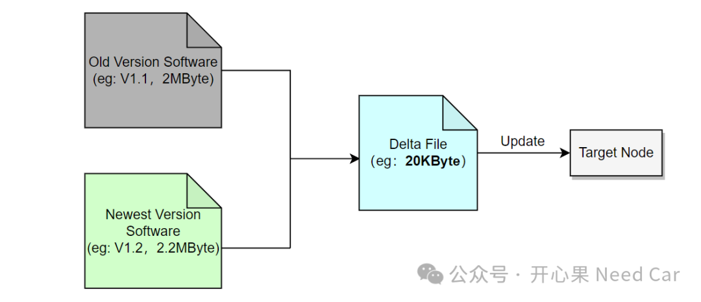
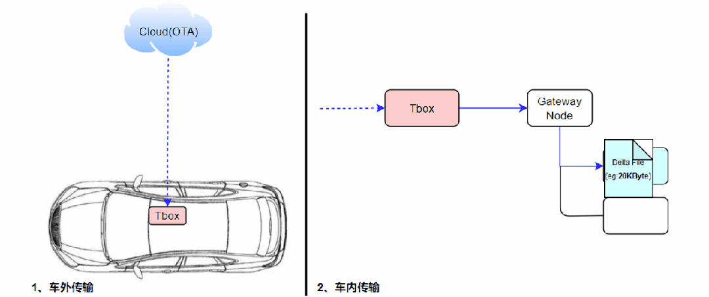

返回本专题目录差分升级，带来了哪些好处？
开心果 Need Car · 2024-07-31T06:36:00+08:00 · 微信原文
前文《差分升级，真的能提高升级效率？》，我们讨论过差分升级的话题，主要聚焦在差分升级是否能提高升级效率。如果我们基于汽车MCU级芯片，讨论差分升级方案，似乎讨论的话题不多，至少目前为止，汽车MCU级芯片还鲜少见差分升级方案的应用。相对其他工控领域，汽车行业使用的很多技术和方案并不算创新，甚至可以说是套用。比如本文要讨论的差分升级，差分升级很早就在手机、家电等工况领域应用，可是，咱们车企还是没有普及。咱们本着存在即合理的理念，聊一聊差分升级的优势，或许不久的将来，差分升级会成为车辆升级的一种备选方案。我们已经知道，差分算法的优势就是可以通过差分算法将老版本和新版本之间的差异部分提取出来，形成差分包（Delta File），示意如下：

如果程序改动不大，那么，相对原有的程序，差分包的Size也就不大。如果对差分包使用压缩算法（Compression algorithm），可以进一步压缩差分包大小，最终发送给升级节点的文件Size会进一步的降低。
当传输给目标升级节点的Size降低以后，会带来哪些好处呢？从云端（OTA）下发数据以后，由于物理链路的通信速率固定，所以，传输的数据量越小，传输到目标节点的用时越少，示意如下：
如果数据是通过OTA方式传输，发送的数据量越小，也就意味着越节省流量。在一定程度上，节省流量的本质就是在省钱。所以，在功能可实现的前提下，虽然升级节点解压缩、还原差分包、更新程序等操作并不节省时间，但是，节省了成本。在能节省成本面前，其他的是不是需要让步呢？这一点在手机业务领域应该更为突出。所以，如果在汽车领域也面临着"省流量"的问题时，差分升级方案在汽车领域的应用，或许会更普遍。
对于汽车行业，在工厂或者4S店售后更新软件程序包，可以通过诊断仪，不需要考虑流量问题；如果使用OTA方式升级控制器软件程序，流量就是一个需要面对的问题。而有些OEM的车辆，终身送流量，所以，流量也就不是主要制约因素。所以，这或许是差分升级方案在汽车行业推进慢的部分原因。点击下方关注，一起聊聊Autosar/嵌入式，如果需要，联系作者进群，给你更专业的解答